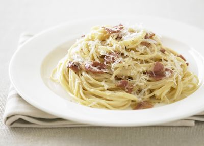

My Favorite Food!
Spaghetti Carbonara

Ingredients
- 300gr of Spaghetti pasta
- 100gr aprox. Bacon or Pancetta cut in cubes
- 200ml Whipped cream
- Manchego cheese
- Olive oil
- Salt and pepper
Directions
- Take a pot and boil the pasta for 8-10 minutes
- Take a pan and sprinkle it with a little bit of olive oil.
- Half fry the bacon/pancetta.
- Lower the heat of the pan to the minimum and pour the whipped cream
- Cut the Manchego cheese in fine slices and put them in the pan
- Add some salt and pepper
- Stir until everything is nicely mixed up
- Use a strainer with the cooked pasta
- Put the pasta in the pan and mixed everything together
Click here to know more about the traditional way of cooking carbonara pasta.